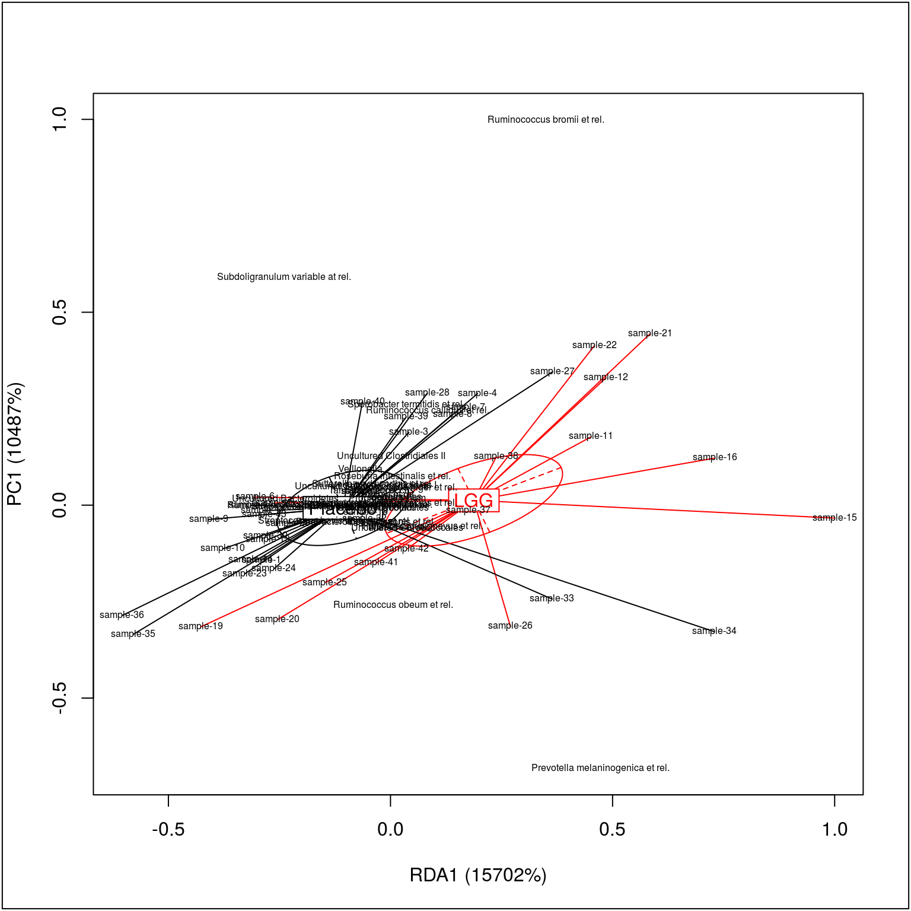

RDA
RDA analysis and visualization.
Load the package and example data:
library(microbiome)
data(peerj32) # Data from https://peerj.com/articles/32/
pseq <- peerj32$phyloseq # phyloseq data
pseq.trans <- transform(pseq, "hell") # Hellinger transformBagged RDA
Bagged RDA provides added robustness in the analysis compared to the standard RDA. Fit bagged (bootstrap aggregated) RDA on a phyloseq object (alternatively you could apply it to the abundance matrix and covariates directly):
# In any real study, use bs.iter = 100 or higher
# to achieve meaningful benefits from the bagged version.
# In this example we use bs.iter = 2 just to speed up the
# example code for educational purposes
res <- rda_bagged(pseq.trans, "group", bs.iter=2)Visualizing bagged RDA:
plot_rda_bagged(res)
Standard RDA
Standard RDA for microbiota profiles versus the given (here ‘time’) variable from sample metadata (see also the RDA method in phyloseq::ordinate)
x <- pseq.trans
otu <- abundances(x)
metadata <- meta(x)
library(vegan)
rda.result <- vegan::rda(t(otu) ~ factor(metadata$time),
na.action = na.fail, scale = TRUE)Proportion explained by the given factor
summary(rda.result)$constr.chi/summary(rda.result)$tot.chi## [1] 0.01540884RDA visualization
Visualize the standard RDA output.
plot(rda.result, choices = c(1,2), type = "points", pch = 15, scaling = 3, cex = 0.7, col = metadata$time)
points(rda.result, choices = c(1,2), pch = 15, scaling = 3, cex = 0.7, col = metadata$time)
pl <- ordihull(rda.result, metadata$time, scaling = 3, label = TRUE)
RDA significance test
permutest(rda.result) ##
## Permutation test for rda
##
## Permutation: free
## Number of permutations: 99
##
## Call: rda(formula = t(otu) ~ factor(metadata$time), scale = TRUE,
## na.action = na.fail)
## Permutation test for all constrained eigenvalues
## Pseudo-F: 0.6572996 (with 1, 42 Degrees of Freedom)
## Significance: 0.9RDA with confounding variables
For more complex RDA scenarios, use the standard RDA available via the vegan R package.
# Pick microbiota profiling data from the phyloseq object
otu <- abundances(pseq.trans)
# Sample annotations
metadata <- meta(pseq.trans)
# RDA with confounders using the vegan function
rda.result2 <- vegan::rda(t(otu) ~ metadata$time + Condition(metadata$subject + metadata$gender))